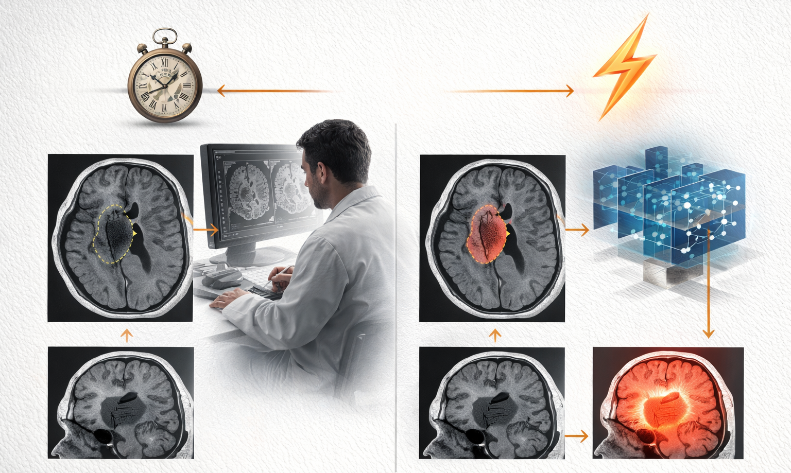
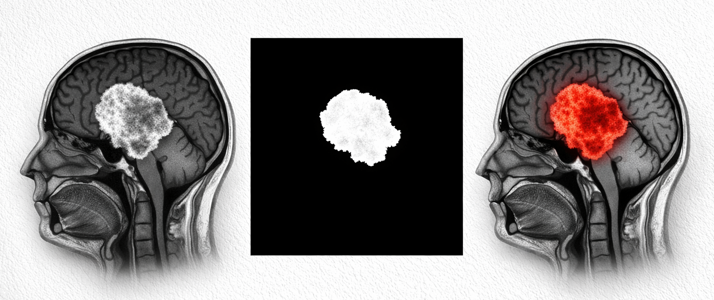

1. Introducción#
1.1 Contexto Clínico#
Los tumores cerebrales se encuentran entre las condiciones médicas más críticas a nivel mundial, con una incidencia estimada de 308.102 nuevos casos y 251.329 muertes reportadas globalmente en 2020, según datos de la Organización Mundial de la Salud. Su impacto en la expectativa y calidad de vida de los pacientes es severo, particularmente en los tumores malignos de alto grado como el glioblastoma, cuya tasa de supervivencia a cinco años no supera el 5%. La detección temprana y la caracterización precisa del tumor son determinantes en el pronóstico del paciente, ya que permiten planificar intervenciones quirúrgicas, radioterapia y quimioterapia de forma oportuna y personalizada [MFL18].
Los tumores cerebrales se clasifican en primarios, cuando se originan en células del propio cerebro, y secundarios o metastásicos, cuando provienen de otros órganos. Entre los primarios, el glioma representa el 78% de los tumores malignos en adultos, mientras que el meningioma es el tipo benigno más frecuente. El tumor hipofisario, aunque generalmente benigno, puede afectar significativamente funciones endocrinas y visuales. La clasificación de la Organización Mundial de la Salud estratifica estos tumores en cuatro grados según su tasa de crecimiento, malignidad y capacidad invasiva, lo que determina directamente el protocolo de tratamiento [DeA01].
1.2 El Rol de la Resonancia Magnética y sus Limitaciones Actuales#
{kind=link}

Fig. 1 Segmentación manual frente a segmentación automatizada de tumores cerebrales.#
La Resonancia Magnética (MRI) es el estándar de oro en el diagnóstico y monitoreo de tumores cerebrales, gracias a su capacidad de generar imágenes de alta resolución de las estructuras cerebrales de forma no invasiva y sin radiación ionizante. Las imágenes ponderadas en T1 con contraste, en particular, destacan con precisión los límites del tumor al realzar las regiones con ruptura de la barrera hematoencefálica, característica distintiva de los tumores de alto grado [FRM+26].
Sin embargo, el análisis manual de estas imágenes por parte de radiólogos y neurólogos es un proceso altamente demandante en tiempo y sujeto a variabilidad inter-observador. Un estudio completo de MRI cerebral puede contener cientos de cortes en múltiples planos anatómicos, y la delineación manual del volumen tumoral — necesaria para planificación quirúrgica y radioterapia — puede tomar entre una y cuatro horas por paciente. Esta realidad, combinada con la escasez de especialistas en muchas regiones del mundo, crea una necesidad urgente de sistemas automatizados que asistan en la detección, localización y segmentación de tumores cerebrales [MJB+15].
1.3 El Problema de la Segmentación Automatizada#
{kind=link}

Fig. 2 Flujo de trabajo de segmentación de tumores cerebrales. De izquierda a derecha: resonancia magnética T2-FLAIR original, máscara de segmentación de referencia y superposición de la predicción del modelo.#
La segmentación automática de tumores cerebrales en MRI es un problema de visión por computadora que consiste en asignar una etiqueta a cada píxel de la imagen, distinguiendo el tejido tumoral del tejido cerebral sano. A diferencia de la clasificación a nivel de imagen, la segmentación exige que el modelo comprenda tanto el contexto global de la imagen como los detalles locales a nivel de píxel, lo que representa un reto técnico considerablemente mayor [FRM+26].
Las principales dificultades de este problema incluyen la alta variabilidad morfológica de los tumores, cuya forma, tamaño y localización difieren significativamente entre pacientes y tipos tumorales; la irregularidad en el contraste y la intensidad de señal en las regiones tumorales; la similitud visual entre tejido tumoral y estructuras sanas adyacentes; y la presencia de artefactos de adquisición propios del entorno clínico. Estas características hacen que los modelos entrenados en condiciones controladas enfrenten desafíos importantes al ser aplicados en escenarios reales [MJB+15], [MPOH26].
1.4 Avances en Deep Learning para Segmentación Médica#
En la última década, el aprendizaje profundo ha transformado el campo de la segmentación de imágenes médicas. La arquitectura U-Net, propuesta por Ronneberger et al. en 2015, estableció el paradigma encoder-decoder con conexiones de salto que se convirtió en el estándar de referencia para segmentación médica [RFB15]. Desde entonces, variantes como Attention U-Net, que incorpora mecanismos de atención en las conexiones de salto [OSLF+18], y arquitecturas híbridas como TransUNet [CLY+21] y Swin-UNet [CWC+22], que integran Vision Transformers para capturar dependencias de largo alcance, han demostrado mejoras progresivas en benchmarks establecidos. De forma paralela, módulos de atención ligeros como CBAM [WPLK18] han permitido incorporar recalibración de características de canal y espacial sin incrementar sustancialmente el costo computacional, con resultados prometedores en tareas de análisis de tumores cerebrales [PKN26].
No obstante, el progreso en este campo ha estado limitado en parte por la disponibilidad de datasets de alta calidad. Colecciones ampliamente usadas como el dataset Cheng o los datasets de Kaggle presentan problemas de desbalance de clases, inconsistencias en las anotaciones y falta de diversidad en las condiciones de adquisición. El dataset BraTS, aunque comprehensivo, se enfoca exclusivamente en gliomas y utiliza datos preprocesados que no reflejan la variabilidad real del entorno clínico [MJB+15]. Estas limitaciones restringen la generalización de los modelos desarrollados sobre ellos [FRM+26].
1.5 Gap en la Literatura y Motivación#
{kind=link}
Fig. 3 Planos cerebrales ortogonales. Visualización de secciones axiales, coronales y sagitales.#
En este contexto, Fateh et al. presentaron en 2026 el dataset BRISC (BRain tumor Image Segmentation and Classification), publicado en Scientific Data de Nature Portfolio [FRM+26]. BRISC aborda directamente las limitaciones de los datasets existentes al ofrecer 6.000 imágenes MRI T1 con contraste, distribuidas de forma balanceada entre cuatro clases — glioma, meningioma, tumor hipofisario y casos no tumorales — y tres planos anatómicos: axial, coronal y sagital. Las máscaras de segmentación pixel a pixel fueron anotadas y validadas por radiólogos y médicos certificados, con un coeficiente Dice de 0.924 entre anotaciones iniciales y verificadas por expertos [FRM+26].
A pesar de que los propios autores de BRISC establecieron benchmarks con doce modelos de segmentación, identificamos dos gaps relevantes en su trabajo. Primero, el mejor modelo reportado — SaberNet — alcanzó un Weighted mIoU de 80.6%, dejando un margen de mejora significativo. Segundo, y más importante, ninguno de los benchmarks reportados analiza el rendimiento de segmentación desagregado por plano anatómico, a pesar de que BRISC cuenta con representación balanceada en los tres planos. Esta omisión es clínicamente relevante, dado que la morfología tumoral percibida varía considerablemente entre cortes axiales, coronales y sagitales, y un modelo robusto debería mantener rendimiento consistente independientemente del plano de adquisición [FRM+26]. Adicionalmente, el análisis exploratorio de datos de este proyecto identificó un desplazamiento estadísticamente significativo en la distribución entre los conjuntos de entrenamiento y prueba del dataset, un fenómeno documentado en la literatura como un obstáculo real para la generalización de los modelos en imagen médica [KJS26], [MPOH26].
1.6 Objetivos#
Objetivo General
Desarrollar y evaluar una arquitectura de aprendizaje profundo para la segmentación píxel a píxel de tumores cerebrales en imágenes MRI T1 sobre el dataset BRISC 2025, superando el Weighted mIoU de 80.6 % establecido por SaberNet como mejor modelo de referencia publicado
Objetivos Específicos
Realizar un análisis exploratorio del dataset BRISC 2025 que caracterice la distribución de imágenes y máscaras por clase tumoral y plano anatómico.
Implementar y evaluar cinco arquitecturas representativas de segmentación semántica sobre BRISC 2025, estableciendo líneas base de comparación bajo condiciones estandarizadas.
Diseñar e implementar una arquitectura de segmentación original, fundamentada en revisión de literatura reciente, que incorpore mecanismos de atención de canal y espacial para mejorar la delimitación de regiones tumorales en imágenes MRI T1.
Evaluar el rendimiento del modelo propuesto mediante métricas estándar (Weighted mIoU, Dice Score) desagregadas por tipo de tumor y por plano anatómico, comparándolo sistemáticamente con los modelos benchmark.
Analizar la capacidad de generalización entre planos anatómicos de los modelos evaluados, identificando patrones de rendimiento diferencial entre los planos axial, coronal y sagital.